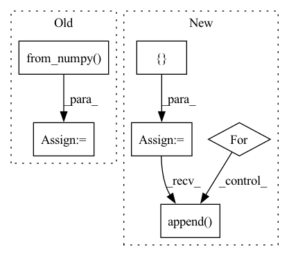

Pattern ID :21198
Before Change
x_test = dataset.prepare("test", col_set="feature")
index = x_test.index
x_test = torch.from_numpy( x_test.values) .float()
x_test = x_test.to(self.device)
self.sfm_model.eval()
with torch.no_grad():After Change
self.sfm_model.eval()
x_values = x_test.values
sample_num = x_values.shape[0]
preds = []
for begin in range(sample_num)[::self.batch_size]:
if sample_num-begin<self.batch_size:
end = sample_num
else:
end = begin + self.batch_size
x_batch = torch.from_numpy(x_values[begin:end]).float()
if self.device != "cpu":
x_batch = x_batch.to(self.device)
with torch.no_grad():
if self.device != "cpu":
pred = self.sfm_model(x_batch).detach().cpu().numpy()
else:
pred = self.sfm_model(x_batch).detach().cpu().numpy()
preds.append( pred)
return pd.Series(np.concatenate(preds), index=index)
def save(self, filename, **kwargs):In pattern: SUPERPATTERN
Frequency: 4
Non-data size: 6
Instances Fragment ID: 67846859
Project Name: microsoft/qlib
Commit Name: 64b7748033326b0aaa3c4c907ccd9b2d353d553d
Time: 2020-11-25
Author: haouyw2@gmail.com
File Name: qlib/contrib/model/pytorch_sfm.py
M Class Name: SFM
N Class Name: SFM
M Method Name: predict(2)
N Method Name: predict(2)
M Parent Class: Model
N Parent Class: Model
M File Name: qlib/contrib/model/pytorch_sfm.py
N File Name: qlib/contrib/model/pytorch_sfm.py
M Start Line: 415
M End Line: 427
N Start Line: 420
N End Line: 445
Before Change
mask = torch.zeros_like(image[:, :1, :, :])
else:
logger.info("InteractiveSeg run with prev_mask")
mask = torch.from_numpy( prev_mask / 255) .unsqueeze(0).unsqueeze(0).float()
pred_probs = self.predictor(image, clicks, mask)
pred_mask = pred_probs > 0.5After Change
return self.forward(rgb_np_img, clicks, form["img_md5"])
def forward(self, rgb_np_img, clicks, img_md5):
input_point = []
input_label = []
for click in clicks:
x = click[0]
y = click[1]
input_point.append( [x, y])
input_label.append(click[2])
if img_md5 and img_md5 != self.prev_img_md5:
self.prev_img_md5 = img_md5 Fragment ID: 67846938
Project Name: sanster/lama-cleaner
Commit Name: a6aec566d963e67c17c0871dca1c89d26e1cdcaa
Time: 2023-04-06
Author: cwq1913@gmail.com
File Name: lama_cleaner/plugins/interactive_seg.py
M Class Name: InteractiveSeg
N Class Name: InteractiveSeg
M Method Name: forward(4)
N Method Name: forward(4)
M Parent Class: BasePlugin
N Parent Class: BasePlugin
M File Name: lama_cleaner/plugins/interactive_seg.py
N File Name: lama_cleaner/plugins/interactive_seg.py
M Start Line: 242
M End Line: 264
N Start Line: 48
N End Line: 75
Before Change
values = np.concatenate(values, axis=0).astype(_DTYPE)
values = torch.from_numpy(values)
labels = np.concatenate(labels, axis=0).astype(_DTYPE)
labels = torch.from_numpy( labels)
return values, labels
def intervals_iou(itv_a:Tensor, itv_b:Tensor, iou_type="iou") -> Tensor:After Change
n_fields = len(batch[0])
except:
raise ValueError("No data")
ret = []
for i in range(n_fields):
values = [[item[i]] for item in batch]
values = np.concatenate(values, axis=0).astype(_DTYPE)
values = torch.from_numpy(values)
ret.append( values)
return tuple(ret)
def intervals_iou(itv_a:Tensor, itv_b:Tensor, iou_type="iou") -> Tensor: Fragment ID: 67846951
Project Name: deeppsp/torch_ecg
Commit Name: ee05a1edb7783d4928b0eea028455c71eb1fe050
Time: 2021-10-14
Author: wenh06@gmail.com
File Name: torch_ecg/utils/utils_nn.py
M Class Name: AnonimousClass
N Class Name: AnonimousClass
M Method Name: default_collate_fn(1)
N Method Name: default_collate_fn(1)
M Parent Class:
N Parent Class:
M File Name: torch_ecg/utils/utils_nn.py
N File Name: torch_ecg/utils/utils_nn.py
M Start Line: 515
M End Line: 521
N Start Line: 513
N End Line: 523
Before Change
print("".join(cn_sent))
// 将当前以单词id表示的英文句子数据转为tensor，并放如DEVICE中
src = torch.from_numpy( np.array(data.dev_en[i])) .long().to(DEVICE)
// 增加一维
src = src.unsqueeze(0)
// 设置attention mask
src_mask = (src != 0).unsqueeze(-2)
// 用训练好的模型进行decode预测
out = greedy_decode(model, src, src_mask, max_len=MAX_LENGTH, start_symbol=data.cn_word_dict["BOS"])
// 初始化一个用于存放模型翻译结果句子单词的列表
translation = []
// 遍历翻译输出字符的下标（注意：开始符"BOS"的索引0不遍历）
After Change
在data上用训练好的模型进行预测，打印模型翻译结果
sp_chn = chinese_tokenizer_load()
trg = []
res = []
with torch.no_grad():
// 在data的英文数据长度上遍历下标
for batch in tqdm(data):
// 待翻译的英文句子
en_sent = batch.src_text
// 对应的中文句子
cn_sent = batch.trg_text
// 打印模型翻译输出的中文句子结果
for i in range(len(en_sent)):
src = batch.src[i]
// 增加一维
src = src.unsqueeze(0)
// 设置attention mask
src_mask = (src != 0).unsqueeze(-2)
// 用训练好的模型进行decode预测
decode_result = greedy_decode(model, src, src_mask,
max_len=config.max_len).squeeze().tolist()
// 模型翻译结果解码
translation = sp_chn.decode_ids(decode_result)
trg.append(cn_sent[i])
res.append( translation)
if i == 3:
break
res = [res]
Fragment ID: 67846869
Project Name: hemingkx/chinesenmt
Commit Name: 9adf53cb6d9b875c9d173643a8d266d49d6f90eb
Time: 2020-12-15
Author: hemingkx@gmail.com
File Name: train.py
M Class Name: AnonimousClass
N Class Name: AnonimousClass
M Method Name: evaluate(2)
N Method Name: evaluate(2)
M Parent Class:
N Parent Class:
M File Name: train.py
N File Name: train.py
M Start Line: 53
M End Line: 84
N Start Line: 67
N End Line: 95